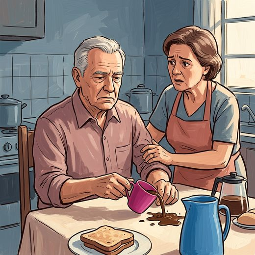

Consulta rápida à beira do leito
Condutas, doses e interações.
Referências da aula · 11
- Feigin VL, Brainin M, Norrving B, et al. World Stroke Organization (WSO): Global Stroke Fact Sheet 2025. Int J Stroke. 2025;20(2):132-44. doi:10.1177/17474930241308142. PMID 39635884.PubMedDOI
- Sacco RL, Kasner SE, Broderick JP, et al. An updated definition of stroke for the 21st century: a statement for healthcare professionals from the American Heart Association/American Stroke Association. Stroke. 2013;44(7):2064-89. PMID 23652265. doi:10.1161/STR.0b013e318296aeca.PubMedDOI
- Easton JD, Saver JL, Albers GW, et al. Definition and evaluation of transient ischemic attack: a scientific statement from the American Heart Association/American Stroke Association Stroke Council. Stroke. 2009;40:2276-93. doi:10.1161/STROKEAHA.108.192218. PMID 19423857.PubMedDOI
- Fonseca AC, Merwick Á, Dennis M, et al. European Stroke Organisation (ESO) guidelines on management of transient ischaemic attack. Eur Stroke J. 2021;6(2):CLXIII-CLXXXVI (). PMID 34414299. doi:10.1177/2396987321992905.PubMedDOI
- McEvoy JW, McCarthy CP, Bruno RM, et al. 2024 ESC Guidelines for the management of elevated blood pressure and hypertension. Eur Heart J. 2024;45(38):3912-4018. doi:10.1093/eurheartj/ehae178. PMID 39210715.PubMedDOI
- Van Gelder IC, Rienstra M, Bunting KV, et al. 2024 ESC Guidelines for the management of atrial fibrillation. Eur Heart J. 2024;45(36):3314-414. PMID 39210723. doi:10.1093/eurheartj/ehae176.PubMedDOI
- Bushnell C, Kernan WN, Sharrief AZ, et al. 2024 guideline for the primary prevention of stroke: a guideline from the American Heart Association/American Stroke Association. Stroke. 2024;55:e344-e424. PMID 39429201. doi:10.1161/STR.0000000000000475.PubMedDOI
- Greenberg SM, Ziai WC, Cordonnier C, et al. 2022 guideline for the management of patients with spontaneous intracerebral hemorrhage. Stroke. 2022;53:e282-e361. PMID 35579034. doi:10.1161/STR.0000000000000407.PubMedDOI
- Adams HP Jr, Bendixen BH, Kappelle LJ, et al. Classification of subtype of acute ischemic stroke (TOAST). Stroke. 1993;24(1):35-41. PMID 7678184. doi:10.1161/01.str.24.1.35.PubMedDOI
- Saver JL. Time is brain—quantified. Stroke. 2006;37(1):263-6. PMID 16339467. doi:10.1161/01.STR.0000196957.55928.ab.PubMedDOI
- Wardlaw JM, Smith C, Dichgans M. Small vessel disease: mechanisms and clinical implications. Lancet Neurol. 2019;18(7):684-96. PMID 31097385. doi:10.1016/S1474-4422(19)30079-1.PubMedDOI